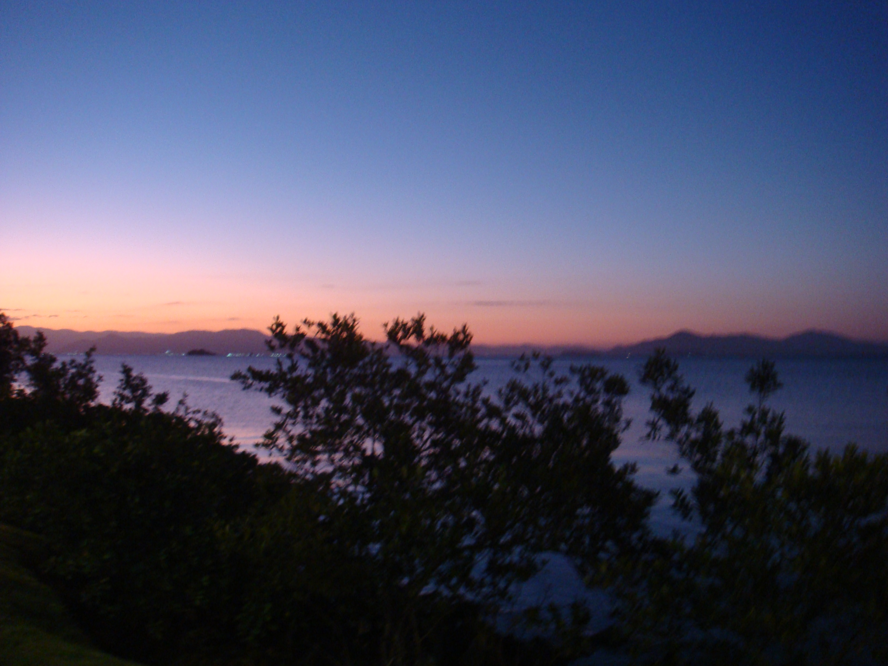
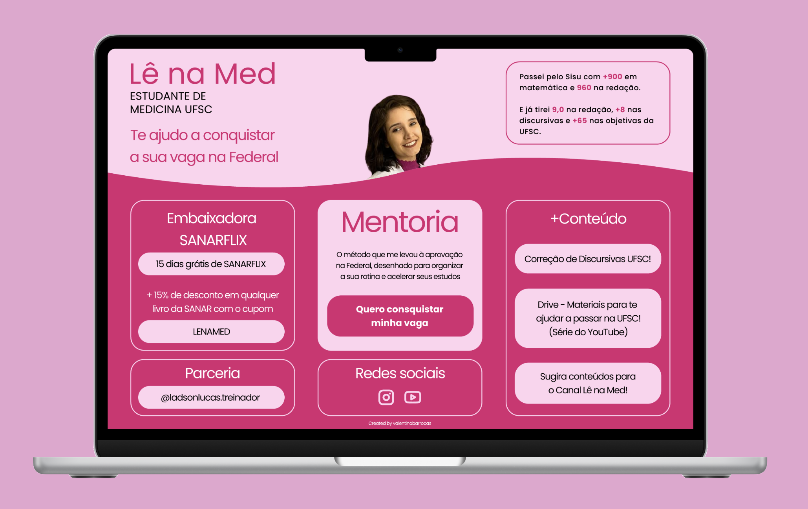
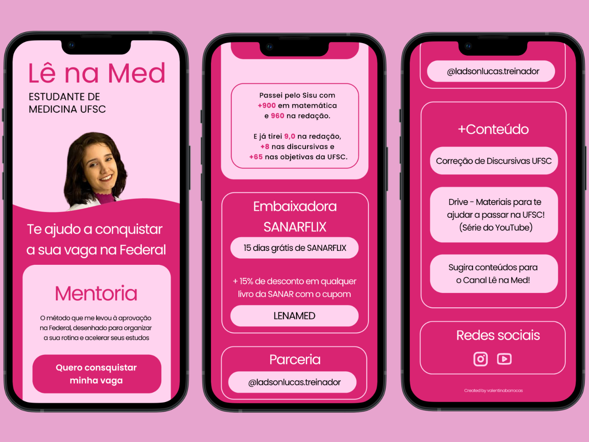

fotografia analógica como patrimônio cultural
2026a pesquisa investiga a fotografia analógica como patrimônio cultural imaterial na era digital. artigo aceito para apresentação no 9º simpósio científico do icomos brasil (unesco).

o retorno das câmeras digitais compactas como tendência
2025a pesquisa investiga o retorno da estética fotográfica das câmeras digitais compactas (digicams) no contemporaneidade.
acessibilidade cultural em plataforma de streaming audiovisual
2020a pesquisa investiga a acessibilidade para o público surdo por meio de legendas em produções audiovisuais em plataforma de streaming.


link-in-bio @le_na_med
2026redesign do link-in-bio da criadora de conteúdo lê na med, estudante de medicina, migrando de um linktree genérico para uma página autoral. mantendo a identidade visual já existente da marca, o projeto trouxe mais personalidade e funcionalidade: layout com descrições, hierarquia visual mais clara e cards organizados por tipo de conteúdo (mentoria, parcerias, redes sociais), adaptado para mobile e desktop.

portfólio valentinabarrocas.com
2026
portfólio pessoal prototipado no figma e desenvolvido com html, css e javascript, sem frameworks ou templates prontos.
o design foi pensado para ser único, transformando a navegação em uma experiência que remete à exposição de uma obra de arte em um museu digital.
o projeto já foi atualizado algumas vezes e o código-fonte se encontra no link abaixo.
animação frame-a-frame
2018
animação 2d desenvolvida à mão, quadro a quadro, no photoshop.
cada frame foi desenhado individualmente utilizando a técnica de onion skinning, que permite visualizar os quadros anteriores como referência para manter a continuidade do movimento.
criativa multidisciplinar + produtora multimídia + especialista em artes + pesquisadora em imagem, memória e cultura visual + foto, vídeo, design, escrita e código.